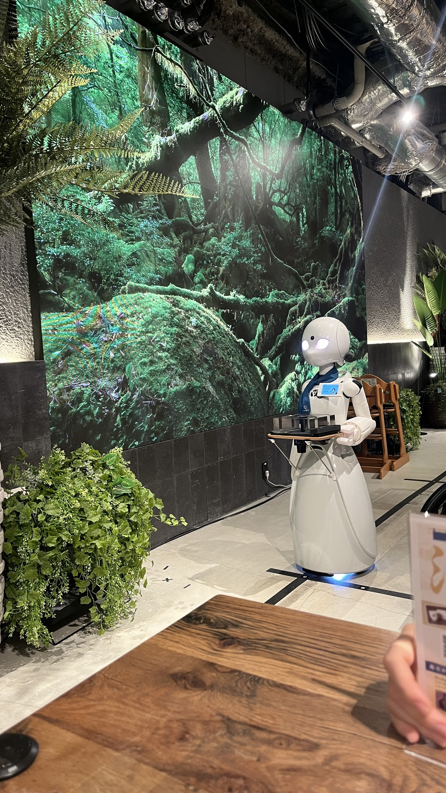
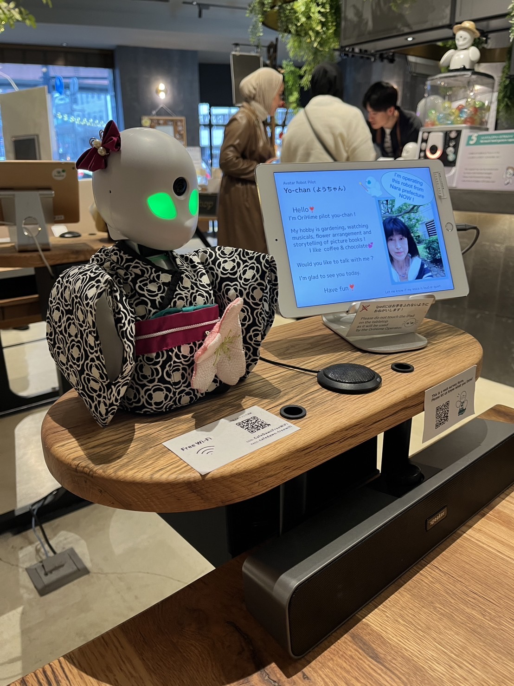
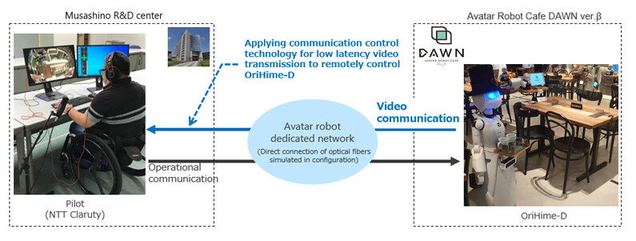

判斷何者為假圖（6 組）
資安思考 · 互動小測
以下六組各有一張真照片與一張學生以 AI 生成的假圖，請選出你認為是「假圖」的那一側。
在數位時代中，國一學生早已活在社群與演算法所構成的世界，卻未必理解其運作方式。本課程以數位足跡、數位分身與演算法為核心，引導學生看見日常經驗背後的結構，理解平台如何影響其觀看、思考與表達。同時，透過對社群互動與自我形象的反思，協助學生在關鍵的自我認同發展階段，建立有意識的數位身份與表達方式。課程亦強調數位公民素養，培養學生面對資訊、權力與科技影響時的判斷能力，進而理解自身在數位世界中的位置，並做出更有意識的選擇。

從「工具操作」進入「數位公民素養」，讓學生在數位世界中更有自覺力。



